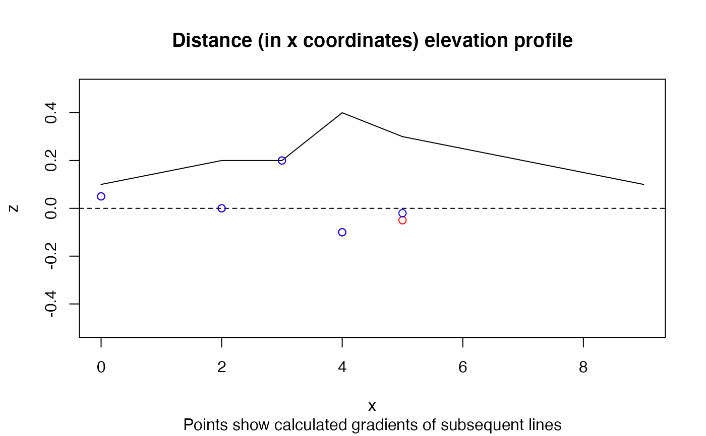

R/slopes.R
slope_matrix.RdCalculate the gradient of line segments from a 3D matrix of coordinates
slope_matrix(m, e = m[, 3], lonlat = TRUE) slope_matrix_weighted(m, e = m[, 3], lonlat = TRUE)
| m | Matrix containing coordinates and elevations |
|---|---|
| e | Elevations in same units as x (assumed to be metres) |
| lonlat | Are the coordinates in lon/lat order? |
x = c(0, 2, 3, 4, 5, 9) y = c(0, 0, 0, 0, 0, 9) z = c(1, 2, 2, 4, 3, 1) / 10 m = cbind(x, y, z) plot(x, z, ylim = c(-0.5, 0.5), type = "l")#> [1] 0.05 0.00 0.20 -0.10 -0.05(gxy = slope_matrix(m, lonlat = FALSE))#> [1] 0.05000000 0.00000000 0.20000000 -0.10000000 -0.02030692title("Distance (in x coordinates) elevation profile", sub = "Points show calculated gradients of subsequent lines")